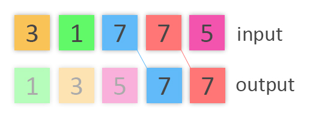
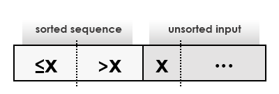
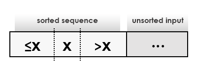

"Informally, an algorithm is any well-defined computational procedure that takes some value, or set of values, as input and produces some value, or set of values, as output. An algorithm is thus a sequence of computational steps that transform the input into the output."
A sorting algorithm is an algorithm that takes a sequence of unordered elements as an input and returns the same elements as an output but in specified by certain criterion order. Example ordering can be numerical, decreasing or non-decreasing, or alphabetical.
Many sorting algorithms exist and they are all designed to solve the same problem. However, they can differ vastly in terms of efficiency. Insertion sort takes roughly O(n2) time to sort a sequence of n numbers while merge sort requires O(logn) time for the same input. Even though insertion sort outperforms merge sort for very small-sized arrays, for large n merge sort is immensely more efficient. The algorithms covered in this project are InsertionSort, SelectionSort, BubbleSort, RadixSort, HeapSort, MergeSort, CountingSort and QuickSort.
Stability preserves the order of equal elements. In other words, if two elements are equal in the input data, they will appear in the same relative order in the output. Note the positions of the 7s in the following example:
In-place algorithm is an algorithm that uses no extra auxiliary data structure: it does not require any additional storage to manipulate the input. However, use of auxiliary variables may be allowed. In-place sorting algorithm overwrites the input by the output in the process and therefore such algorithm is only based on replacements or swaps.
References: Introduction to Algorithms, 3rd Edition (MIT Press)
In computer science, Big O notation is used to describe how the processing time changes as the problem size grows. The time complexity of a sorting algorithm is expressed using Big O notation. Time complexity means the count of elementary operations performed by the algorithm for some input. We focus on worst-case, average-case and best-case time complexity. For example, O(n2) is the upper bound of a function: the algorithm takes at most O(n2) time to sort an input (but it may also take less). Ω(nlogn) is the lower bound of a function: the algorithm can solve the problem in at least Ω(nlogn) time for the best possible scenario. When Θ(n2) is used to describe worst-case input, it means that the algorithm takes exactly Θ(n2) to sort the array: that may be an inverse sorted array.
| Algorithm | Best | Average | Worst |
|---|---|---|---|
| BubbleSort | Ω(n) | Θ(n2) | O(n2) |
| SelectionSort | Ω(n2) | Θ(n2) | O(n2) |
| InsertionSort | Ω(n) | Θ(n2) | O(n2) |
| RadixSort | Ω(nk) | Θ(nk) | O(nk) |
| MergeSort | Ω(nlogn) | Θ(nlogn) | O(nlogn) |
| HeapSort | Ω(nlogn) | Θ(nlogn) | O(nlogn) |
| QuickSort | Ω(nlogn) | Θ(nlogn) | O(n2) |
| CountingSort | Ω(n+k) | Θ(n+k) | O(n+k) |
Bubble sort is a simple sorting algorithm with worst and average time complexity of Θ(n2) making it inefficient for large arrays. Bubble sort is a stable sorting algorithm.
The idea is simple. Scan the whole array in pairs of adjacent elements and swap the elements that are in wrong order. Bubble sort can detect already sorted arrays and thus has O(n) best case run-time. Interesting thing about bubble sort is that elements moving in different directions have different speed. For example. assume the largest element in the array is positioned in the beginning. That element will win all comparisons to the end of the array and will take its sorted position in one loop iteration. On the contrary, the smallest element being in the end will move just one place to the left per loop iteration.
BubbleSort pseudo code with ability to detect a sorted array
for i = 0 to A.length - 1
swapped = false
for j = 0 to A.length - 1
if A[j] > A[j+1]
swap A[j] with A[j+1]
swapped = true
end for
if swapped is false then
break
end if
end for
Standard implementation of BubbleSort
for i = 0 to A.length - 1
for j = 0 to A.length - 1
if A[j] > A[j+1]
swap A[j] with A[j+1]
end for
end for
References: BubbleSort on Wikipedia
Selection sort is an in-place sorting algorithm with O(n2) time complexity for any input case. The algorithm is inefficient for large inputs and generally falls behind insertion sort. However, selection sort is based on a simple idea - scan to whole array to find the smallest or the largest element. The algorithm is easy to understand and analyse. Selection sort preserves the order of equal elements.
The input array is divided into two parts - sorted sub-list and sub-list of the remaining items. The sorted sequence builds up from left to right. On each iteration the algorithm finds the smallest or the largest element in the sub-list of remaining items and puts it at rightmost position in the sorted sub-list.
for i = 0 to A.length - 1
for j = i + 1 to A.length
if A[i] > A[j]
swap A[i] and A[j]
end if
end for
end for
References: SelectionSort on Wikipedia
Insertion sort is a simple sorting algorithm that builds the sorted array one item at a time. Despite being less efficient than most of the modern algorithms, insertion sort have its advantages. The working principle is easy to implement and is efficient for small-sized arrays. The run-time of the algorithm can drop dramatically for nearly sorted arrays yielding a time complexity of O(nk) when each element of the input is no more than k places away from its sorted position. Insertion sort preserves the relative order of equal elements and thus is considered stable. The best case input is an already sorted array as every element is compared just once to the rightmost element in the sorted sequence. This results in linear running time of O(n). The worst case is a sorted array in reverse order. Each iteration moves the first element in the unsorted data to the first position of the sorted sequence by comparing it to all sorted elements and moving all of them one position on the right. This case results in quadratic worst case running time of Θ(n2). The average case is also quadratic and thus making insertion sort impractical for large arrays. However, the algorithm is still one of the fastest for sorting small-sized arrays. Insertion sort is very similar to selection sort which is discussed in the next section. Some implementations of divide-and-conquer algorithms such as quick sort and merge sort use insertion sort for sorting sub-arrays that are smaller than a given threshold.
The way most of the people sort cards in bridge hand is similar to the working principle of insertion sort. The algorithm iterates, taking one element from the input on each repetition, and builds a sorted output list. Insertion sort removes one element from the input and inserts it to its correct position in the sorted list. It repeats until there are no elements left in the input data.
 for j = 2 to A.length
key = A[j]
#insert A[j] into the sorted sequence A[1..j-1]
i = j - 1
while i > 0 and A[i] > key
A[i+1] = A[i]
i = i - 1
end while
A[i+1] = key
end for
Demo of the working principle of Insertion sort. The darker gray background shows the sorted sequence. The number that is written in the sorted sequence is marked with a slightly thicker border. The number that is read is underlined and coloured in black.
References: InsertionSort on Wikipedia
Radix sort is a non-comparative sorting algorithm that build a sorted array by grouping keys that share the same significant position and value. For example, initially 104 and 74 are both grouped as ending with the digit 4. Secondly, 104 is grouped with elements that have 0 as a second least significant digit and 74 is grouped with numbers sharing the 7. Radix sort can be used to sort strings of characters. It is an alternative to high-performance comparison sorts that require O(nlogn) comparisons.
Least significant digit radix sort is fast and stable sorting algorithm with time complexity of O(wn) for n keys with w average key length. This time complexity is possible when keys of different length are put into groups according to their length and radix sort is ran on each group. The different results are then combined. The working principle is the following: take the last digit of the keys, group the keys based on that one digit, take the next digit (10s,100s...), group keys based on that digit and repeat the grouping process until no digits remain.
Radix-Sort(A,d) where d is the length of the elements
for i = 1 to d
use a stable sort to sort array A on digit i
Note: The visualisation of RadixSort in this project uses BucketSort
References: RadixSort on Wikipedia
Merge sort is a divide-and-conquer algorithm: the problem is divided into sub-problems which are solved separately and a general solution is produced by combining the sub-solutions. It is efficient, comparison-based and stable sorting algorithm. The time complexity of merge sort is O(nlogn) in all possible input cases.
The input array is divided into n sub-lists. Put in other words, each number is considered a sub-list. Then repeatedly merge sub-lists in twos, fours, eights, etc. until the sorted sequence is produced.
Note: The MergeSort animation in this project implements a version of MergeSort called Bottom-Up MergeSort
References: MergeSort on Wikipedia and implementations
Heap sort combines to best attributes of merge sort and insertion sort: in-place sorting from insertion sort and the run-time O(nlogn) of merge sort. It introduces the heap data structure: a nearly complete binary tree where each node is an element of the array. Two kinds of heaps exist: min-heaps and max-heaps and they both satisfy the heap property. The max-heap property states that a value of a node is at most the value of its parent. This means that the biggest number is always the root.
Procedure called Max-Heapify is used to maintain the max-heap property. We use the Build-Max-Heap procedure to run Max-Heapify on every node in the tree.
References: HeapSort on Wikipedia and implementations
Introduction to Algorithms, 3rd Edition (MIT Press)
Quick sort is an efficient comparison sort. Most implementations of quick sort are not stable but the algorithm can operate in-place and thus requires small amount of memory. The average performance of quick sort is O(nlogn) but some implementations are faster than merge sort and heap sort.
Firstly, a pivot element is chosen: many strategies exist to choose the pivot but the implementation in the project is randomised quick sort and thus the pivot is randomly picked. The next step is partitioning: put all elements that are smaller than the pivot before it and all bigger elements after it (where equal elements go is a matter of choice). After the partitioning the pivot is at its correct position in the output. The rest of the array is divided into two partitions. Then the same procedures start again recursively on each partition and then on each new partition until the array is sorted.
References: QuickSort on Wikipedia and implementations
Introduction to Algorithms, 3rd Edition (MIT Press)
CountingSort is extremely fast but not-in-place sorting algorithm and thus requires a lot of aditional memory to perform. The running time of the algorithm is O(n+k).
Initially, a counting array is build. The length of this array is equal to the biggest element from the array that will be sorted. The next step is to increment count[i] for each occurrence of element i. For example, reading element 21 in the original array increments the value of count[21] by 1. Lastly, rewrite the original array by using the information stored in the counting array. Look at the example below and the visualisation of the algorithm for more information.